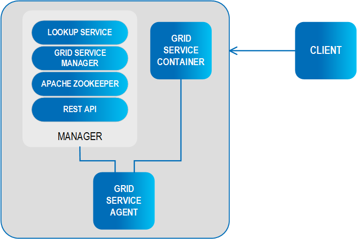

The basic unit of deployment in the data grid is the Processing Unit.
Once packaged, a processing unit is deployed onto the GigaSpaces runtime environment, which is called the Service Grid. It is responsible for materializing the processing unit's configuration, provisioning its instances to the runtime infrastructure and making sure they continue to run properly over time.
When developing your processing unit, you can run and debug the processing unit within your IDE. You will typically deploy it to the GigaSpaces runtime environment when it's ready for production or when you want to run it in the real-life runtime environment
The service grid is composed of a number of components:

A processing unit can be deployed to the Service Grid using one of GigaSpaces deployment tools (UI, CLI, API), which uploads it to the GSM Grid Service Manager, the component which manages the deployment and life cycle of the processing unit). The GSM analyzes the deployment descriptor and determines how many instances of the processing unit should be created, and which containers should run them. It then ships the processing unit code to the running GSC's Grid Service Container and instructs them to instantiate the processing unit instances. The GSC provides an isolated runtime for the processing unit instance, and exposes its state to the GSM for monitoring. This phase in the deployment process is called provisioning.
Once provisioned, the GSM continuously monitors the processing unit instances to determine if they're functioning properly or not. When a certain instance fails, the GSM identifies that and re-provisions the failed instance on to another GSC, thus enforcing the processing unit's SLA.
In order to discover one another in the network, the GSCs and GSMs use a Lookup Service, also called LUS. Each GSM and GSC registers itself in the LUS, and monitors the LUS to discover other GSM and GSC instances.
Finally, the GSA Grid Service Agent component is used to start and manage the other components of the Service Grid (i.e. GSC, GSM, LUS). Typically, the GSA is started with the hosting machine's startup. Using the agent, you can bootstrap the entire cluster very easily, and start and stop additional GSCs, GSMs and lookup services at will.
All of the above components are fully manageable from the GigaSpaces management interfaces such as the UI, CLI and Admin API.
The Grid Service Manager is the component which manages the deployment and life cycle of the processing unit.
When a processing unit is uploaded to the GSM (using one of GigaSpaces deployment tools: UI, CLI, API), the GSM analyzes the deployment descriptor and determines how many instances of the processing unit should be created, and which containers should host them. It then ships the processing unit code to the relevant containers and instructs them to instantiate the processing unit instances. This phase in the deployment process is called provisioning.
Once provisioned, the GSM continuously monitors the processing unit instances to determine if they're functioning properly or not. When a certain instance fails, the GSM identifies that and re-provisions the failed instance on to another GSC, thus enforcing the processing unit's SLA.
It is common to start two GSM instances in each Service Grid for high-availability reasons: At any given point in time, each deployed processing unit is managed by a one GSM instance, and the other GSM(s) serve as its hot standby. If the active GSM fails for some reason, one of the standbys automatically takes over and start managing and monitoring the processing units that the failed GSM managed.
The Grid Service Container provides an isolated runtime for one (or more) processing unit instance, and exposes its state to the GSM.
The GSC can be perceived as a node on the grid, which is controlled by The Grid Service Manager. The GSM provides commands of deployment and un-deployment of the Processing Unit instances into the GSC. The GSC reports its status to the GSM.
The GSC can host multiple processing unit instances simultaneously. The processing unit instances are isolated from each other using separate Class loaders (in java) or AppDomains (in .NET).
It is common to start several GSCs on the same physical machine, depending on the machine CPU and memory resources. The deployment of multiple GSCs on a single or multiple machines creates a virtual Service Grid. The fact is that GSCs are providing a layer of abstraction on top of the physical layer of machines. This concept enables deployment of clusters on various deployment typologies of enterprise data centers and public clouds.
The Lookup Service provides a mechanism for services to discover each other. Each service can query the Lookup service for other services, and register itself in the Lookup Service so other services may find it. For example, the GSM queries the LUS to find active GSCs.
Note that the Lookup service is primarily used for establishing the initial connection - once service X discovers service Y via the Lookup Service, it usually creates a direct connection to it without further involvement of the Lookup Service.
Service registrations in the LUS are lease-based, and each service periodically renews its lease. That way, if a service hangs or disconnects from the LUS, its registration will be cancelled when the lease expires.
The Lookup Service can be configured for either a multicast or unicast environment (default is multicast).
Another important attribute in that context is the lookup group. The lookup group is a logical grouping of all the components that belong to the same runtime cluster. Using lookup groups, you can run multiple deployments on the same physical infrastructure, without them interfering with one another. For more details please refer to Lookup Service Configuration.
It is common to start at least two LUS instances in each Service Grid for high-availability reasons. Note that the lookup service can run in the same process with a GSM, or in standalone mode using its own process.
The following services use the LUS:
Processing Unit Instances (actual instances of a deployed Processing Unit)
Space Instances (actual instances of a Space that form a topology)
For advanced information on the lookup service architecture, refer to The Lookup Service.
The Grid Service Agent (GSA) is a process manager that can spawn and manage Service Grid processes (Operating System level processes) such as The Grid Service Manager, The Grid Service Container, and The Lookup Service. Typically, the GSA is started with the hosting machine's startup. Using the agent, you can bootstrap the entire cluster very easily, and start and stop additional GSCs, GSMs and lookup services at will.
Usually, a single GSA is run per machine. If you're setting up multiple Service Grids separated by Lookup Groups or Locators, you'll probably start a GSA per machine per group.
The GSA exposes the ability to start, restart, and kill a process either using the Administration API or the GigaSpaces Management Center.
The GSA manages Operating System processes. There are two types of process management, local and global.
Local processes simply start the process type (for example, a Grid Service Container without taking into account any other process types running by different GSAs.
Global processes take into account the number of process types Grid Service Manager for example) that are currently running by other GSAs (within the same lookup groups or lookup locators). It will automatically try and run at least X number of processes across all the different GSAs (with a maximum of 1 process type per GSA). If a GSA running a process type that is managed globally fails, another GSA will identify the failure and start it in order to maintain at least X number of global process types.
The Elastic Service Manager (ESM) manages the Elastic Processing Unit together with the GSM.
The Apache Load Balancer Agent is used when deploying web applications.
The Transaction Manager (TXM) is an optional component. When executing transactions that spans multiple space partitions you should use the Jini Transaction Manager or the Distributed Transaction Manager. See the Transaction Management section for details.